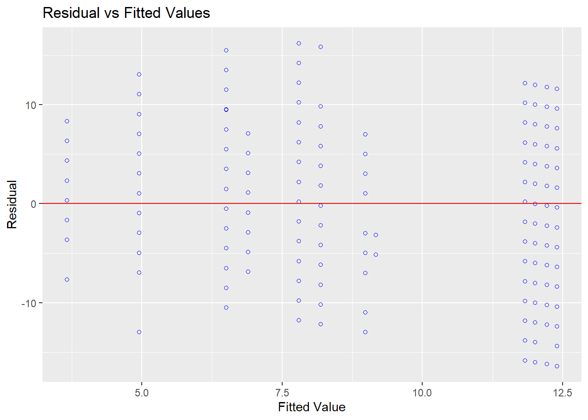
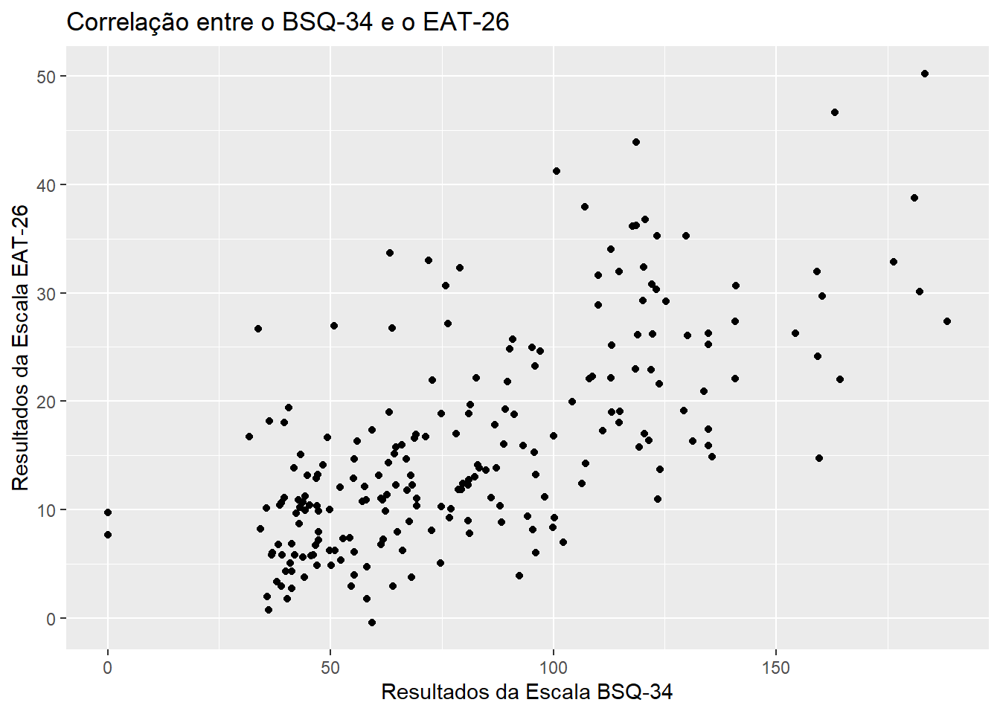

Capítulo 8 ANOVA de medidas repetidas
Objetivos do capítulo
1. Apresentar a ANOVA de Medidas Repetidas.
2. Realizar passo-a-passo a modelagem analítica.
3. Verificar os pressupostos e implementar as correções sugeridas.
4. Escrever os resultados.
A ANOVA de medidas repetidas é oferece uma moelagem analítica para a análise de dados longitudinais pareados, isto é, relacionados. Esta técnica pode ser entendida como uma expansão da ANOVA ou um caso especial do Modelo Linear de Efeitos Mistos (LMM) (???), que é realizada quando se deseja verificar se os resultados de vários grupos variam significativamente com o tempo. Os pressupostos são similares aos discutidos em outros testes inferenciais:
(i) Os dados são aleatórios e representativos da população
(ii) a variável dependente é contínua
(iii) Os resíduos do modelo são normalmente distribuídos
(iv) há esfericidade dos grupos
8.1 Pesquisa
A esse momento, vamos ter como referência de análise a pesquisa intitulada “Avaliação psicométrica em português do indicador de dor crônica de Helsinki em cães com sinais crônicos de osteoartrite”, que tem como primeira autora Lídia Matsubara e eu sou co-autor. Essa pesquisa foi publicada no “Arquivo Brasileiro de Medicina Veterinária e Zootecnia” em 2019.
Nessa pesquisa, temos um grupo controle e um grupo experimental e todos os participantes foram avaliados em 5 momentos diferentes do tempo: 1 semana antes do início do tratamento (W2), imediatamente antes (W0), duas semanas e quatro semanas após o tratamento ter iniciado (S2 e s4) e após uma semana da retirada do tratamento (s6). Dessa forma, trata-se de um delineamento 2x5, considerando os 2 grupos e as 5 medições ao longo do tempo. A base dados reúne as varáveis da pesquisa em formato largo (wide) Entretanto, o formato longo é o mais tipicamente encontrado para análises longitudinais e, por isso, será implementado a seguir.
tratamento <- dados %>%
mutate(id = row_number()) %>%
select(id, grupo_dummy,starts_with("total_")) %>%
pivot_longer(-c(id,grupo_dummy),
names_to = "tempo",
values_to= "resultado") %>%
rename(grupo = grupo_dummy) %>%
filter(grupo < 3) %>%
mutate(grupo = factor(if_else(grupo == 1, "Placebo", "Experimental"))) %>%
mutate(tempo = factor(case_when(
tempo == "total_w4" ~ "antes",
tempo == "total_w0" ~ "no_dia",
tempo == "total_s2" ~ "semana_2",
tempo == "total_s4" ~ "semana_4",
tempo == "total_s6" ~ "semana_6",
)))As variávies neste conjunto de dados são:
## [1] "id" "grupo" "tempo" "resultado"Dessa forma:
id refere-se a uma identificação única de cada participante.
grupo refere-se ao grupo em que o participante foi alocado, tal como previamente apresentado (controle ou experimental).
tempo diz respeito aos 5 pontos de medida e
resultado é uma variável aleatória contínua do valor obtido na escala utilizada.
8.2 Execução no R
A modelagem estatística envolve definir claramente que o resultado é uma função do tempo, do grupo e da interação tempo x grupo. Conforme exposto, a primeira etapa consiste na apresentação de tabelas e gráficos. Essas técnicas descritivas são muito informativas e permitem uma rápida compreensão dos resultados.
A tabela a seguir apresenta a quantidade de participantes nas condições com o passar do tempo.
tratamento %>%
group_by(grupo, tempo) %>%
count() %>%
pivot_wider(names_from=grupo, values_from = n) %>%
kable() %>% kable_styling(bootstrap_options = c("striped", "hover", "condensed"))| tempo | Experimental | Placebo |
|---|---|---|
| antes | 19 | 21 |
| no_dia | 19 | 21 |
| semana_2 | 19 | 21 |
| semana_4 | 19 | 21 |
| semana_6 | 19 | 21 |
Nota-se que apesar de não ter havido perda amostral, os grupos não tiveram a mesma quantidade de participantes, gerando o que é classicamente entendido como desbalanceamento amostral. Em seguida, a tabela abaixo apresenta os valores da média e do desvio-padrão para todas as condições:
tratamento %>% #base de dados
group_by(grupo,tempo) %>% #agrupar
summarise_at(vars(resultado),lst(mean, sd)) %>% #tirar estatisticas
pivot_longer(-c(grupo, tempo), names_to = "medida") %>%
mutate(key = paste0(medida,"=", value)) %>% #criar um unico inexador
select(grupo, tempo, key) %>% #selecionar apenas as 3 variaveis importantes
separate(key, into=c("medida","resultado"),sep = "=", convert = TRUE) %>% #dividir media e desvio
pivot_wider(names_from = tempo, values_from = resultado) %>% #alargar
kable(., digits=2) %>%
kable_styling(bootstrap_options = c("striped", "hover", "condensed"))| grupo | medida | antes | no_dia | semana_2 | semana_4 | semana_6 |
|---|---|---|---|---|---|---|
| Experimental | mean | 15.11 | 15.95 | 14.89 | 14.00 | 14.11 |
| Experimental | sd | 7.92 | 7.83 | 7.87 | 7.24 | 8.67 |
| Placebo | mean | 17.71 | 17.38 | 16.38 | 14.48 | 16.62 |
| Placebo | sd | 4.58 | 5.53 | 5.59 | 6.42 | 8.24 |
O gráfico abaixo também apresenta as mesmas informações, mas insere uma barra com o erro padrão da média. Isso é útil para interpretação inferencial.
ggplot(tratamento, aes(x=tempo, y=resultado, group=grupo, color=grupo)) + #variaveis
stat_summary(fun = mean, geom = "line", size=1.5, aes(linetype = grupo)) + #linha
stat_summary(fun="mean", geom="point", size=5, aes(shape = grupo)) + #pontos
stat_summary(fun.data = mean_se, geom = "errorbar",size=1) #barra de erro
É possível ver que as barras de erro estão superpostas, isto é, uma dentro da outra. Isso ocorre quando não há diferença significativa entre as condições. No entanto, o teste formal estatístico deve ser realizado. Isso pode ser feito por algumas funções do pacote ez, descritas abaixo:
Sua sintaxe envolve as seguintes características:
data refere-se à base de dados (lembre-se que ela deve estar no formato longo)
dv refere-se à variável dependente (contínua)
wid refere-se à variável com a identificação única de cada aprticipante
within refere-se à variável independente com efeito dentro do tratamento, ou seja, a variável que se repete. Nesse caso, cada uma das semanas
between refere-se à variável independente com efeito entre os tratamentos, ou seja, cada um dos grupos
type refere-se à forma pela qual a soma dos quadrado será calculada. O tipo 3 emula os resultados dos programas típicos e quase sempre é a melhor opção para finalidade de comparação entre resultados
detailed refere-se à apresentação detalhada dos resultados
return_aov refere-se à criação de um objeto no formato aov que tem utilidade para análises comparadas posteriores
Visando facilitar a comunicação, criaremos um objeto (ez_outcome) para armazenar os resultados e, em seguida, iremos acionar a função summary para apresenta-los.
ez_outcome <- ezANOVA(
data = tratamento,
dv = resultado,
wid = id,
within = tempo,
between = grupo,
type = 3,
detailed = TRUE,
return_aov = TRUE)## Warning: Converting "id" to factor for ANOVA.## Warning: Data is unbalanced (unequal N per group). Make sure you specified a
## well-considered value for the type argument to ezANOVA().A mensagem de aviso informa que os grupos estão desbalenceados em relação à quantidade de participantes, o que foi mencionado acima. Antes de interpretar os resultados, é necessário verificar os pressupostos já que a validade dessa interpretação é atrelada à manutenção (ou sua ausência) dos pressupostos que a técnica solicita.
No caso da ANOVA de Medidas Repetidas, é necessário verificar a normalidade e a esfericidade. A normalidade pode ser feita via gráficos e testes estatísticos formais. A esfericidade é verificada resgatando o objeto anteriormente definido (ez_outcome) e o examinando passo a passo. A principal novidade dos pressupostos está na esfericidade, que guarda um princípio similar à homogeneidade e pode ser entendida como sua extensão. A esfericidade se refere às variâncias das diferenças entre todos os pares de medidas serem similares e a homogeneidade se refere à constância das variâncias entre os grupos (Quené and Bergh 2004).
A normalidade dos resíduos é vista pelo gráfico a seguir. Repare que a função mutate foi utilizada para adicionar uma coluna com os resíduos do modelo à base de dados antes de plotá-los.
tratamento %>%
mutate(residuos = proj(ez_outcome$aov)[[3]][, "Residuals"]) %>%
ggplot(aes(x=residuos)) +
geom_histogram(colour="black", fill="grey") +
geom_density(aes(y= ..count..))
É possível argumentar que a normalidade dos resíduos foi relativamente mantida. Caso o interesse fosse um teste formal, ele seria feito pelo Shapiro Wilk, que assume \(H_0\) de normalidade.
##
## Shapiro-Wilk normality test
##
## data: proj(ez_outcome$aov)[[3]][, "Residuals"]
## W = 0.95677, p-value = 8.986e-06Por esse último resultado, como o valor de p foi inferior ao alfa tipicamente estabelecido (0.05), não seria possível manter o pressuposto da normalidade e algo deveria ser feito, como transformação dos dados ou implementação de outra técnica analítica. No entanto, desde a década de 1960 é sabido que o valor de p é inversamente associado ao tamanho da amostra (???; ???). Nessa análise, há 200 observações (40 participantes em cada um dos 5 pontos de medida), o que influencia na redução do valor de p (???). Dessa maneira, o resultado exposto previamente no gráfico é considerado nessa análise.
Já a esfericidade é testada pelo teste de Mauchly. Esse teste define a hipótese nula como presença da esfericidade e idealmente a não rejeição da \(H_0\) é desejada. No entanto, quando o pressuposto da esfericidade é rejeitado, é necessário aplicar algum ajuste, como a correção de Greenhouse-Geisser ou a de Huynh-Feldt. Ambas as técnicas ajustam os graus de liberdade a partir de um coeficiente particular.
Abaixo esta o ez_outcome, que é dividido em 4 blocos diferentes: $ANOVA, $Mauchly's Test for Sphericity, $Sphericity Corrections e $aov. Como são muitas informações, os resultados serão especificamente comentados.
ANOVA:
Effect DFn DFd SSn SSd F p p<.05 ges (Intercept) 1 38 48940 7789 238.8 5.697e-18 * 0.8377 grupo 1 38 144.8 7789 0.7063 0.4059 0.01504 tempo 4 152 146.9 1689 3.304 0.01254 * 0.01526 grupo:tempo 4 152 30.95 1689 0.6962 0.5957 0.003255 Mauchly’s Test for Sphericity:
Effect W p p<.05 3 tempo 0.2561 1.322e-07 * 4 grupo:tempo 0.2561 1.322e-07 * Sphericity Corrections:
Effect GGe p[GG] p[GG]<.05 HFe p[HF] p[HF]<.05 3 tempo 0.5739 0.0351 * 0.6129 0.03191 * 4 grupo:tempo 0.5739 0.5201 0.6129 0.529 aov:
Df Sum Sq Mean Sq F value Pr(>F) grupo 1 144.8 144.8 0.7063 0.4059 Residuals 38 7789 205 NA NA tempo 4 151.2 37.79 3.4 0.01075 grupo:tempo 4 30.95 7.738 0.6962 0.5957 Residuals 152 1689 11.11 NA NA
A primeira parte que se olha é o Mauchly’s Test for Sphericity. Caso haja rejeição da hipótese nula, deve-se olhar inicialmente todos os resultados dispostos no Sphericity Corrections para depois olhar a parte ANOVA.
Caso não haja rejeição da hipótese nula, basta os resultados já na parte ANOVA, que fica ao início do output.
Nessa pesquisa, se rejeitou a esfericidade para o efeito principal do tempo (w = 0.26, p < 0.05) e da interação tempo x grupo (w = 0.26, p < 0.05). Dessa forma, as correções devem ser implementadas nos graus de liberdade de ambos os coeficientes. Duas correções são possíveis, a Greenhouse-Geisser (p[GG]) e a de Huynh-Feldt e existe uma regra prática (rule of thumb) para isso:
- Quando o valor de Greenhouse-Geisser (ϵ ou GGe) é inferior a 0.75, os valores dos graus de liberdade do numerador e do denominador são ajustados pela correção de Greenhouse-Geisser
- quando é superior a 0.75, o ajuste é feito pela de Huynh-Feldt.
Nessa pesquisa, o ajuste será feito via Greenhouse-Geisser.
Antes de iniciar a interpretação dos resultados, lembre-se que toda interpretação deve ser sempre iniciada pela interação. Caso ela seja significativa, não se deve interpretar os efeitos principais.
Repare que a parte Sphericity Corrections tem informações sobre a interação tempo x grupo e da semana. Esses efeitos devem ser interpretados aqui nessa seção, em vez da seção ANOVA. A interação tempo x grupo não é significativa. O valor de p é de 0.52. Manualmente, esse valor pode ser obtido computando a região crítica da cauda à direita da densidade da distribuição F. Para isso, é necessário plugar o valor de F obtido (0.696), encontrado na primeira parte do output (ANOVA), e ajustar o numerador para 2.29 (DFn = 4 x 0.5739 = 2.29) e o denominador para 87.24 (DFd=152 x 0.5739 = 87.24). Assim:
## [1] 0.5224581O efeito principal do tempo é significativo, com valor de p = 0.03.
## [1] 0.03558152O efeito principal do grupo deve ser visto diretamente na parte ANOVA e não é significativo. O valor de p é de 0.40, que pode ser manualmente computado assim:
## [1] 0.4047162Assim, é possível concluir que o passar do tempo gerou uma diferença significativa no resultado da dor dos animais (VD), mas que isso não é relacionado a nenhum grupo específico. Em outras palavras, esse efeito não depende do grupo em que o animal se encontra.
Frequentemente, os resultados corrigidos e os não-corrigidos concluem na mesma direção. Isso é verdadeiro nesse caso. Repare que os resultados não corrigidos:
| Df | Sum Sq | Mean Sq | F value | Pr(>F) | |
|---|---|---|---|---|---|
| grupo | 1 | 144.8 | 144.8 | 0.7063 | 0.4059 |
| Residuals | 38 | 7789 | 205 | NA | NA |
| tempo | 4 | 151.2 | 37.79 | 3.4 | 0.01075 |
| grupo:tempo | 4 | 30.95 | 7.738 | 0.6962 | 0.5957 |
| Residuals | 152 | 1689 | 11.11 | NA | NA |
Chegariam as mesmas conclusões dos corrigidos:
| Effect | GGe | p[GG] | p[GG]<.05 | HFe | p[HF] | p[HF]<.05 | |
|---|---|---|---|---|---|---|---|
| 3 | tempo | 0.5739 | 0.0351 | * | 0.6129 | 0.03191 | * |
| 4 | grupo:tempo | 0.5739 | 0.5201 | 0.6129 | 0.529 |
O valor de P do efeito do tempo saiu de 0.01 (sem correção) para 0.03 (com correção). Já a interação grupo x semana saiu de 0.59 (sem correção) para 0.52 (com correção).
Como escrever os resultados
Os dados foram analisados a partir de uma ANOVA de medidas repetidas investigando o efeito fixo do grupo e do tempo, bem como a interação entre ambos. O teste de Mauchly indicou a violação da esfericidade (w = 0.26, p < 0.01) e, portanto, os graus de liberdade foram corrigidos pelo ajuste de Greenhouse-geisser (ϵ = 0.57). Não houve interação significativa entre o grupo e o tempo (F(2.29, 87.24) = 0.69), nem efeito do grupo (F(1, 38) = 0.71, p < 0.40). O passar de tempo foi significativo no resultado, apesar de apresentar um efeito pequeno (F(2,29, 87.24) = 3.30, p = 0.035, np2 = 0.01).
8.3 Resumo
- A ANOVA de medidas repetidas é um teste bastante utilizado quando participantes de mesmos grupos são avaliados longitudinalmente
- Este modelo pode ser entendido como uma expansão de uma ANOVA ou um caso particular de uma regressão linear de efeitos mistos
- A execução deste teste no R solicita que a base seja transformada para o formato longo
- A interpretação dos resultados é, inicialmente, complicada e precisa ser feita de maneira cautelosa
References
Quené, Hugo, and Huub van den Bergh. 2004. “On Multi-Level Modeling of Data from Repeated Measures Designs: A Tutorial.” Speech Communication 43 (1-2): 103–21. https://doi.org/10.1016/j.specom.2004.02.004.